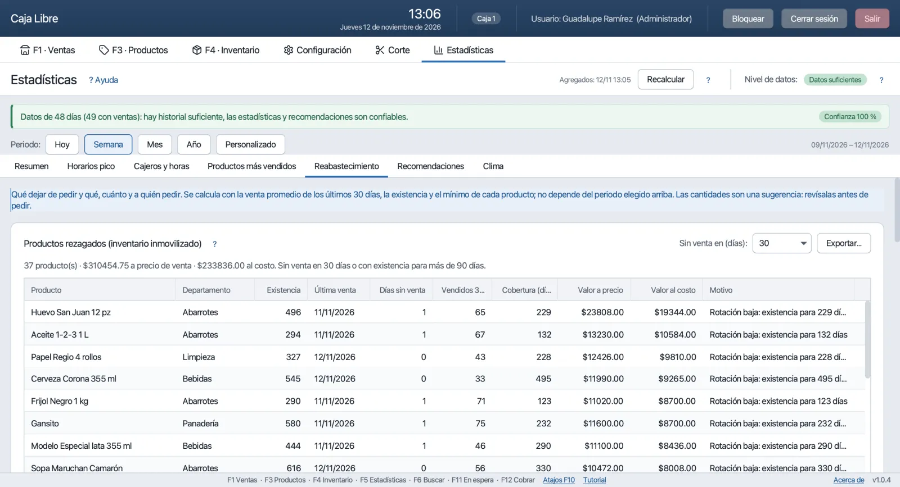

Qué hace
Todo lo que ves en esta página ya existe en el programa; las capturas son reales, con una tienda de ejemplo. Lo que todavía no está, lo digo al final.
Vender y cobrar
La pantalla donde pasas el día. El cursor siempre está en el campo de código: escaneas y el producto aparece en el ticket con su existencia. Escribe 3*código para tres piezas, F6 para buscar por nombre y F12 para cobrar. Las promociones (2×1, 3×2, por departamento, por horario) se aplican solas; el precio de mayoreo se pone con F9 y los descuentos manuales piden permiso.

La ventana de cobro
Escribes lo que recibes o tocas el billete (F1–F5), y el cambio sale en grande. Si el cliente paga una parte con tarjeta y otra en efectivo, los dos campos lo resuelven. Enter cobra; Esc regresa al ticket sin perder nada. Con impresora térmica imprime el ticket y abre el cajón.
¿El cliente se acordó de algo y hay fila? F11 pone el ticket en espera, atiendes al siguiente y lo recuperas después. Puede haber varios en espera por caja.

Productos e inventario
Das de alta un producto escaneando su código: nombre, costo, precio de venta, precio de mayoreo, departamento, unidad (pieza o kilo), mínimo de alerta y, si quieres, foto. Hay un catálogo de artículos comunes para precargar y no empezar de cero. Lo que vendes a granel se captura con decimales o con la báscula.

En Inventario registras las entradas de mercancía por proveedor y los ajustes con su motivo. Cada movimiento queda guardado con fecha y responsable, y los productos bajo el mínimo se resaltan en rojo. Hay historial de precios y de movimientos por producto, y cualquier tabla se exporta a Excel, CSV o PDF.

Proveedores y reabastecimiento
Registras a tus repartidores y sus días de visita. Con un mes de ventas, el programa calcula cuánto se vende de cada cosa, cuánto queda y cuánto conviene pedirle a cada proveedor para aguantar hasta su siguiente visita; con eso arma una orden de compra en borrador que tú revisas y ajustas. También te enseña los rezagados: productos que llevan semanas sin venderse y tienen tu dinero detenido en el anaquel.

Corte de caja
Fondo del día, ventas en efectivo, tarjeta, transferencia y vales, lo que debería haber en el cajón, canceladas y ganancia (solo para quien tiene permiso de verla). Cuentas el efectivo, el programa lo compara y registra el corte con tu nombre. Corte por caja o general, y al día siguiente te pide el fondo.

Estadísticas
Esta es la parte por la que empecé el programa. Venta total, tickets, ticket promedio y comparativos contra la semana y el mes pasados; gráficas por día, por día de la semana y por franja horaria; productos que más dejan; cajeros y horas; sugerencias según el clima de tu ciudad (si hay internet). Cada sección tiene un botón «?» que explica, en palabras sencillas, cómo leer lo que muestra.

Para ser honesto: necesita tiempo. Las proyecciones se hacen con tus propias ventas, no con números inventados. La primera semana solo ves las cuentas del día; a las dos o tres semanas empiezan a verse tus días y horas fuertes; con un mes de ventas las proyecciones, el reabastecimiento por proveedor y los rezagados ya son confiables. El programa te dice en cada pantalla en qué nivel va.
Desde el celular
El programa abre una página en la red Wi-Fi de la tienda. Escaneas un código QR desde Configuración, entras con tu mismo usuario y ves las ventas de hoy, estadísticas, historial e inventario desde el teléfono, en la trastienda o desde la casa si está en la misma red. No hay que instalar ninguna app y nada sale a internet: la página la sirve tu propia computadora.


Lo demás
Cajeros y permisos
Administrador, gerente y cajeros, con permisos por persona. Cancelar o descontar pide la clave del administrador. Todo queda en la bitácora. Ctrl+L bloquea la pantalla para cambiar de cajero.
Impresora, cajón y báscula
Impresoras térmicas de tickets (ESC/POS, 58 u 80 mm) o la impresora normal que ya tengas; apertura del cajón de dinero; báscula por puerto serial para vender a granel sin teclear el peso.
Varias cajas
Una caja con base de datos local, o varias cajas conectadas a un servidor PostgreSQL (gratis) en una computadora de la tienda, con existencias y cortes compartidos. Hay guía y migración desde una sola caja.
Facturación CFDI 4.0
Factura por venta o factura global a través de Facturama, un proveedor autorizado por el SAT. Necesitas una cuenta con ellos (ese servicio tiene costo con Facturama, no conmigo). Si no facturas, no lo configuras y ya.
Respaldos
Copia de seguridad automática al cerrar y restauración desde Configuración. Si se descompone la computadora, instalas el programa en otra y restauras el último respaldo.
Actualizaciones
Cuando hay versión nueva aparece un aviso discreto en la barra de abajo; nunca descarga ni instala nada solo. Bajas el instalador, lo ejecutas encima y tus datos se quedan donde están.
Lo que todavía no está
Prefiero decirlo claro para que nadie lo descargue esperando algo que no tiene:
- Clientes y fiado. Cuentas por cliente y control del crédito. Está en la lista de lo que sigue.
- Leer la nota del proveedor con la cámara. Capturar la entrada de mercancía fotografiando el ticket del repartidor. Hoy es solo una demostración en la página móvil.
- Restaurante. No maneja mesas ni comandas; es para negocios de mostrador.
Si algo de esto te urge, escríbeme: las peticiones de quienes apoyan el proyecto van primero.